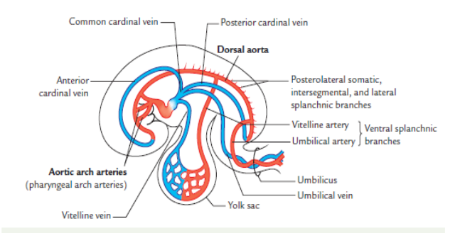
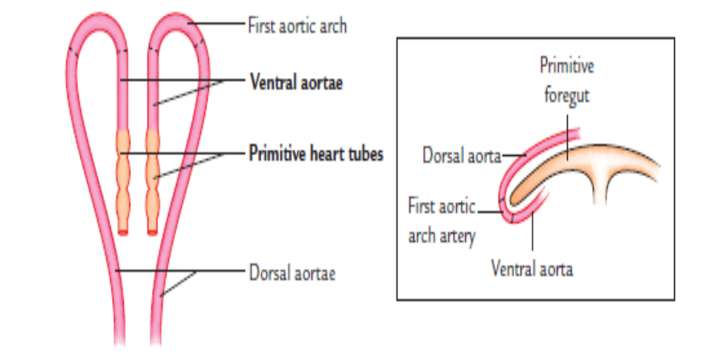
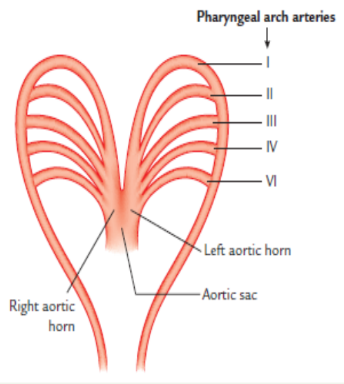
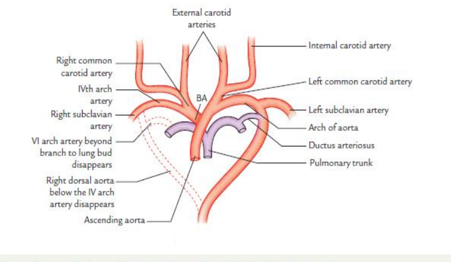
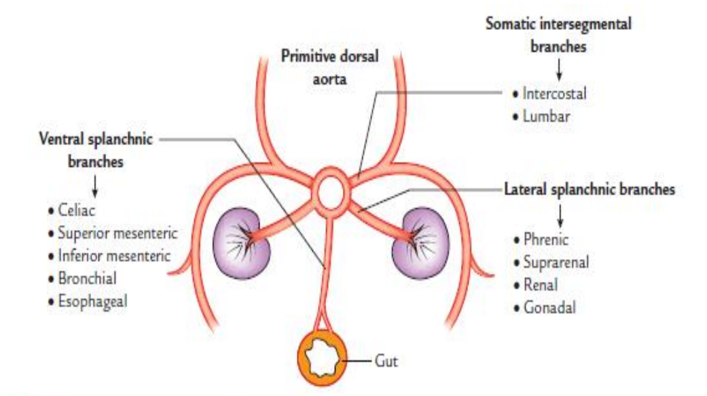

Totoz Collection !
Back
Development of Blood Vessels
first blood cells are formed by induction of.....
✓ mesodermal cells to hemangioblasts
When and where does hemopoiesis first occur during development
✓ When ⟹ end of 3rd week
✓ Where ⟹ Yolk sac & Allantois
✓ Where ⟹ Yolk sac & Allantois
WHen does Hemopoiesis takes place in the embryo and where exactly does it take place.....
✓ When ⟹ 5th week
✓ Where ⟹ liver, spleen, thymus & lymph nodes
✓ Where ⟹ liver, spleen, thymus & lymph nodes
WHen does the bone marrow become the primary site of hemopoiesis
✓ 3 months before birth
blood vessels develop by 2 processes, namely
✓ Vasculogenesis
✓ angiogenesis
✓ angiogenesis
Define Vasculogenesis & angiogenesis
✓ Vasculogenesis ⟶ process of formation of new vessels by coalescence of angioblasts (specialized mesenchymal cells)
✓ angiogenesis ⟶ process of sprouting of new vessels from existing ones
✓ angiogenesis ⟶ process of sprouting of new vessels from existing ones
Explain the mechanism of Vasculogenesis
✓ mesenchymal cells differentiate into angioblast cells
✓ Angioblasts Aggregates to form the blood islands
✓ clefts appear in the blood islands and communicate with one another forming capillary plexus
✓ while the surrounding cells flatten and bcome squamous sqamous filya
✓ Angioblasts Aggregates to form the blood islands
✓ clefts appear in the blood islands and communicate with one another forming capillary plexus
✓ while the surrounding cells flatten and bcome squamous sqamous filya
What are the roles of each; (1) FGF2 (2) VEGF (3) PDGF (4) TGF-B
✓ FGF2 ↠ Molecular regularization of vasculogenesis
✓ VEGF ↠ Molecular regularization of vasculogenesis & Sprouting of new vessels from existing ones
✓ PDGF ↠ maturation and modeling of vasculature
✓ TGF-B ↠ maturation and modeling of vasculature
✓ VEGF ↠ Molecular regularization of vasculogenesis & Sprouting of new vessels from existing ones
✓ PDGF ↠ maturation and modeling of vasculature
✓ TGF-B ↠ maturation and modeling of vasculature
What are the First arteries to appear in a developing embryo ?
✓ right and left primitive aortae
Give the name of the sites of blood vessel development in the 3rd week and what are vessles named in the repective sites are
✓ wall of yolk sac become the vitelline vessels
✓ connecting stalk & chorion become the umbilical vessels
✓ connecting stalk & chorion become the umbilical vessels
The 2 Longitudinal vessels (Dorsal aortae) Develop after formation of the embryonic fold. True or False ?
✓ False, they develop befors formation of the folds then join together as the embryo folds
The 2 Longitudinal vessels known as the Dorsal Aortae develop in the flattened embryonic disc next to which structures
✓ either side of notochord and along the dorsal wall of yolk sac
What happens to the Dorsal Aortae at its caudal and cephalic end
✓ Cephalic End → invades the cardiogenic area & join the primitive heart tubes
✓ Caudal End → Extends into the connecting stalk as umbilical arteries
✓ Caudal End → Extends into the connecting stalk as umbilical arteries
Some blood vessels sprout from each dorsal aorta into the yolk sac that forms the ....
✓ vitelline arteries
The Umbilical Veins Develop in relation to what ?
✓ somatopleuric layer of intraembryonic coelom
The vitelline veins develop from where ?
✓ splanchnopleuric layer of intraembryonic coelom
Where do the cardinal Veins develop from?
✓ body wall of embryo
Draw the the vessels of the embryo as seen at the 26th day of development

Where so the umbilical and vitelline veins pass as they join the cranial end of each primitive tube
✓ septum transversum
The Cardinal Vein Joins the Caudal End of the Primitive Heart Tube. TRUE or FALSE
✓ FALSE.
✓ it joins the cranial end
✓ it joins the cranial end
The arteries of the body develop from 2 main sources, namely ?
✓ pharyngeal (aortic) arch arteries
✓ dorsal aorta
✓ dorsal aorta
What do each of the main sources develop into ?
✓ aortic arches ⇉ arteries of head and neck region
✓ dorsal aorta ⇉ arteries of rest of the body (everywhere else except the head and neck)
✓ dorsal aorta ⇉ arteries of rest of the body (everywhere else except the head and neck)
The primitive aorta divides into what ?
✓ ventral aorta
✓ Dorsal aorta
✓ first aortic arch artery
✓ Dorsal aorta
✓ first aortic arch artery
Draw the Primitive aorta and its partitions

In relation to the primitive aorta how is the aortic sac formed..... i have even given you ka leakage
✓ The aortic sac is formed from fusion of the proximal end of the 2 ventral aortae that comes as a result of fusion of the tuma heart tubes
What do the unfused parts of the ventral aorta become
✓ right & left horns
The pharyngeal arch arteries are connected ventrally to what and Dorsally to what
✓ ventrally to the right or left horn
✓ dorsally to the dorsal aorta
✓ dorsally to the dorsal aorta
Draw an illustration of the Aortic Arches

In adult life, What artery represents the 1st arch artery
✓ maxillary artery
2nd arch artery persists for some part of fetal life as what......
✓ stapedial artery
After some aortic arteries dissappear the aortic sac is connected only with which aortic arteries.......
✓ 3rd, 4th and 6th arches
of the remaining Arch Arteries, which open into the ventral part of the arortic sac and which open into the dorsal part of the aortic sac
✓ ventral part ⇒ 3rd & 4th arch arteries
✓ dorsal part ⇒ 6th arch artery
✓ dorsal part ⇒ 6th arch artery
How does formation of the Spiral Septum affect blodd flow in the Arch Arteries
✓ When this Spiral septum extends into the aortic sac, it Fuses with its posterior wall in such a way that blood from the pulmonary trunk
passes only into the 6th arch artery while that from the ascending aorta passes into the 3rd & 4th arch arteries
The portion of the dorsal aorta that Disappears on both the right and left Dorsal Aorta is called ?
✓ ductus caroticus
The Rght Dorsal Aorta eventually Disappears. TRUE olo FALSE
✓ TRUE my brither and sister, irriz TRUE
The 6th arch artery gives off an artery that gors where aaii....
✓ the developing lung bud
What is the Ductus Arteriosus
✓ This is the portion between the the artery budding off the 6th arch artery and the Dorsal Aorta
✓ It carries most of the blood from the right ventricle to the dorsal aorta
✓ It carries most of the blood from the right ventricle to the dorsal aorta
What is the fate of the Ductus Arteriosus
✓ It is obliterated after birth & is then seen as the ligamentum arteriosum
The external Carotid Artery comes from where ?
✓ it comes as a bud off each 3rd arch artery as it grows cranially
Draw a diagram showing the development of the main arteries of the head, neck and thorax

The dorsal aorta gives off a series of lateral intersegmental branches to the body wall, what does the 7th cervial intersegmental artery supply
✓ upper limb bud
Where is the Internal Carotid Artery Derived from ?
✓ 3rd arch artery distal to external Carotid Artery
✓ Carnial part of the dorsal aorta
✓ Carnial part of the dorsal aorta
The carotid Bud of the 3rd Arch Artery gives rise to ?
✓ External Carotid Artery
How about the Common Carotid artery, where does it develop from ?
✓ 3rd Arch Artery proximal to external carotid Artery
Left 7th cervical intersegmental Artery develops into ?
✓ Left subclavian Artery
The development of the right subclavian artery can be split into the proximal part and the distal part. Where does each part develop from ?
✓ proximal Part → 4th arch artery
✓ Distal Part → right 7th cervical intersegmental artery
✓ Distal Part → right 7th cervical intersegmental artery
The Brachiocephalic Artery is derived from ?
✓ Right Horn of the Aortic Sac
What structures are involved in the development of the arch of the Aorta
✓ ventral part of the aortic sac
✓ left horn
✓ left 4th arch artery
✓ left horn
✓ left 4th arch artery
What structures are dervied from the Truncus Arteriosus ?
✓ Ascending Aorta
✓ Pulmonary Trunk
✓ Pulmonary Trunk
Pulmonary Artery arises from....?
✓ 6th Arch artery between the lung bud and pulmonary trunk
✓
✓
What structures contribute t the development of the Descending Aorta
✓ Left Dorsal Aorta
✓ Left Median Vessels
✓ Left Median Vessels
What are the three groups of branches that the primitive Dorsal Aorta gives off to
✓ ventral splanchnic arteries
✓ lateral or intermediate splanchnic arteries
✓ dorsolateral (somatic intersegmental) Arteries
✓ lateral or intermediate splanchnic arteries
✓ dorsolateral (somatic intersegmental) Arteries
Display you skill of understanding by outlining a well labeled diagram of the Main Branch Groups of the Primitive Dorsal Aorta

What changes to the umbilibcal arteries can be observed as the Dorsal Aortae fuse
✓ Before the fusion of the two dorsal aortae, the umbilical arteries appear as continuations of their distal ends
✓ After fusion of the dorsal aortae, they appear as lateral branches of the single dorsal aorta
✓ After fusion of the dorsal aortae, they appear as lateral branches of the single dorsal aorta
each umbilical artery gets linked up with
✓ part of the fifth lumbar intersegmental artery which forms the internal iliac artery
What is the fate of the proximal and distal part of the umbilical artery
✓ proximal part ↣ becomes the superior vesical artery
✓ distal part ↣ is obliterated to form the medial umbilical ligament
✓ distal part ↣ is obliterated to form the medial umbilical ligament
✓
✓
✓
What s the difference between Fetal Circulation and Adult Circulation
✓ Blood in the fetus is oxygenated by placenta and not by lungs
✓ During fetal life, the lungs are collapsed, hence the resistance to blood flow through the lung is much higher, resulting in little amount of blood passing through the lungs
✓ Portal circulation is of little significance
✓ During fetal life, the lungs are collapsed, hence the resistance to blood flow through the lung is much higher, resulting in little amount of blood passing through the lungs
✓ Portal circulation is of little significance
Describe Fully The Fetal Circulation. (hint: include the following structures in your explananation)
✓ left umbilical vein ⇒ Umbilical cord ⇒ umbilicus ⇒ falciform ligament ⇒ left branch of portal vein ⇒ ductus venosus ⇒ foramen ovale ⇒ septum secundum ⇒ ductus arteriosus ⇒ pulmonary veins ⇒ ascending aorta ⇒ 3 large branches ⇒ common iliac arteries ⇒ 2 umbilical arteries
Explain the changes that take place to the following structures after birth; Placenta, Umbilical vein, Ductus Venosus, Pulmonary Circulation, Foramen Ovale, Ductus Arteriosus, Umbilical Arteries
✓ Check out the "Fetal Circulation After Birth" quiz to test your self on what happens to the guys mentioned on the other side of this card
✓
✓
✓
✓
✓
✓
✓
✓
✓
✓
✓
✓
✓
✓
✓
✓
✓
✓
✓
✓
✓
✓
✓
✓
✓
✓
✓
✓
✓
✓
✓
✓
✓
✓
✓
✓
✓
✓
✓
✓
✓
✓
✓
✓
✓
✓
✓
✓
✓
✓
✓